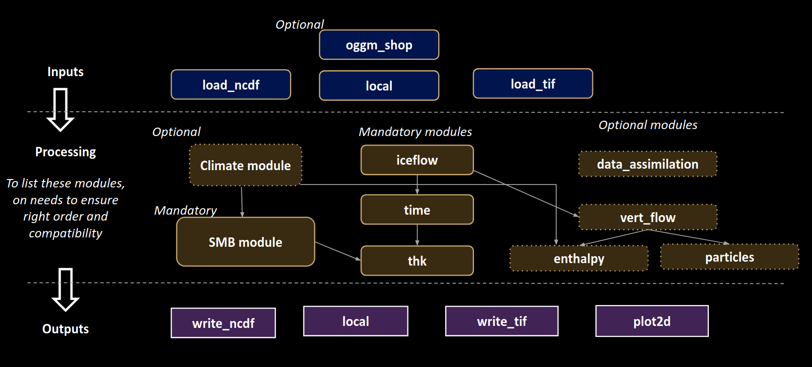
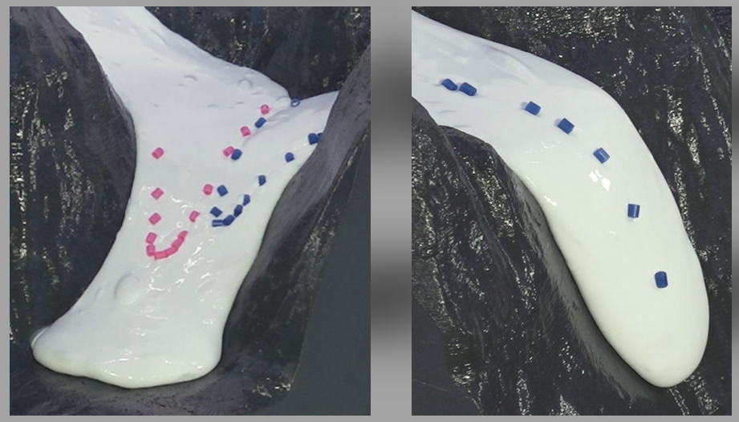

Glacier Modelling#
Session 2 — Lecture 2: Introduction to IGM#
Guillaume Jouvet

Today (Session 2)#
Hour 1 |
Lecture 2: the Instructed Glacier Model (IGM) — how to work with IGM in RenkuLab — first IGM runs (Tutorial 2) |
Hours 2–4 |
Mini-project: set up and run your glacier (with the assistant) |
Break |
Glacier goo: ice flow in the lab |
From Tutorial 1 to IGM#
Tutorial 1: 1D/2D SIA model, synthetic SMB, no sliding, 50 lines of numpy.
A “real” glacier model needs:
real data: topography, ice thickness, outlines, velocities, climate
a better ice-flow model than SIA (steep, narrow valleys; sliding)
a better SMB model (driven by temperature and precipitation)
efficiency: many runs (calibration, scenarios), on a laptop or in the cloud
➡️ IGM: an open-source Python model developed at UNIL — https://igm-model.org
What does IGM solve?#
Same structure as Tutorial 1, at each time step:
Surface mass balance: \(b(x,y,t)\) from an ELA or from climate
Ice flow: 3D velocity field from a higher-order (Blatter–Pattyn) Stokes approximation, with Glen’s law and basal sliding
Mass conservation: \(\dfrac{\partial h}{\partial t} + \nabla\cdot(\bar{\mathbf{u}}\,h) = b\)
Update time, write outputs, repeat
Where is the machine learning?#
Step 2 (ice flow) is the costly part. IGM solves it with a neural network (a CNN):
input: thickness, surface, ice softness, basal friction, …
output: the ice velocity field
trained to minimize the energy of the ice-flow problem (“physics-informed”: no data needed)
Two modes:
off-line emulator: network pre-trained on many glaciers, frozen → very fast, for “standard” mountain glaciers ← we use this
on-line solver: network (re)trained during the run → general, slower
➡️ Runs fast on CPU, much faster on GPU.
IGM is modular#

inputs (load data) → processes (run at each time step) → outputs (write results)
All modules share one object: the state (state.thk, state.usurf, state.smb, state.t, …)
A parameter file (experiment/params.yaml)#
defaults:
- common: iceflow_offline # pre-trained ice-flow emulator
- override /inputs: [local] # 1) which data
- override /processes: [smb, iceflow, time, thk] # 2) which physics, in order
- override /outputs: [local, live_dashboard] # 3) which outputs
processes: # parameters that differ from the defaults
smb:
method: simple
simple:
array:
- ["time", "gradabl", "gradacc", "ela", "accmax"]
- [1900, 0.009, 0.005, 2800, 2.0]
- [2000, 0.009, 0.005, 2900, 2.0]
time: {start: 1900.0, end: 2000.0, save: 10.0}
Run it: igm_run +experiment=params
Changing parameters#
Edit the YAML file (keep a copy per experiment!), or
override from the command line, without editing the file:
igm_run +experiment=params processes.time.end=2050
igm_run +experiment=params inputs.oggm_shop.RGI_ID="RGI2000-v7.0-G-11-01189"
Results go to
outputs/<date>/<time>/(or the folder given byhydra.run.dir=...), with a copy of the full configuration (.hydra/config.yaml): every run is reproducible.All parameters and their defaults: https://igm-model.org (Modules)
Data for any glacier: oggm_shop#
Give an RGI v7 ID; IGM downloads (via OGGM) and maps to a 100 m grid:
surface topography (Copernicus DEM)
ice thickness estimate (Millan et al. 2022, or consensus)
glacier outline (RGI v7)
observed surface velocities (Millan et al. 2022)
monthly climate 1901–present (GSWP3-W5E5)
calibrated SMB parameters (to match Hugonnet et al. 2021 geodetic mass balance)
Everything ends up in data/input.nc, cached for the next runs.
Two ways to force the SMB#
1. smb: method: simple — ELA + gradients, prescribed in time
few, intuitive parameters; no climate needed
good to explore sensitivity and to reconstruct the LIA
2. climate: method: oggm + smb: method: oggm — temperature-index model
monthly temperature & precipitation → accumulation and melt
1901–2019: observed climate; outside this period: random years of 1960–1990 + a trend (temperature offset, precipitation factor, relative to 1960–1990):
clim_trend_array:
- ["time", "delta_temp", "prec_scal"]
- [ 2020, 1.3, 1.0] # ≈ today (2000-2019 vs 1960-1990)
- [ 2100, 4.0, 1.0] # +4°C vs 1960-1990
melt_enhancer: scales melt (uncertain melt factors)
Ice-flow parameters#
Ice softness \(A\) (
arrhenius, default 78 MPa⁻³ a⁻¹): softer ice → faster deformationBasal sliding: Weertman-type law, parametrized by
tau_ref: basal shear stress (MPa) needed to slide atu_ref(100 m/yr)lower
tau_ref→ more slippery bed → faster sliding
Usually tuned so that modelled surface speeds match observed ones (provided in input.nc).
What you get#
output.nc: maps through time (thickness, surface, speed, SMB, …) ➡️ maps, flowline profilesoutput_ts.nc: ice volume and area through time ➡️ time seriesdashboard_XXXX.png: quick-look images during the run
Helpers in utils/helper.py (used in the notebooks): show_dashboard, compare_runs, animate_glacier_evolution, analyze_time_series, plot_flowline_evolution, compare_modeled_observed_velocity
The modelling workflow for your project#
Present: download data, check the initial state (thickness, velocities vs. observations)
Past: start before the LIA (e.g. 1700) from today’s geometry, cool then warm the climate, to reproduce the LIA maximum (~1850) and the retreat to today ➡️ calibration / validation
Future: 2020–2100 under several warming scenarios (e.g. SSP1-2.6, SSP2-4.5, SSP5-8.5)
Glaciers respond with a delay: mind the response time.
Back in RenkuLab#
Same as in Session 1:
Open your project on renkulab.io → Resume your paused session (or Launch a new one)
Course material in
~/work/glamod/, your SWITCHdrive folder next to it
New today: we run IGM, a command-line program. We work with three tools, side by side in JupyterLab.
How to work with IGM: three tools#
What |
Where |
|
|---|---|---|
Set the parameters |
YAML file ( |
one file = one experiment |
Run IGM |
Terminal (File → New → Terminal) |
keeps running even if you close the browser tab |
Look at the results |
Notebook, reading |
postprocessing only: never re-runs IGM |
┌──────────────────────┬──────────────────────────────┐
│ params_past.yaml │ analysis.ipynb │
│ (edit, Ctrl+S) │ run = "outputs/past_v1" │
├──────────────────────┤ show_dashboard(run) │
│ Terminal │ compare_runs([...]) │
│ $ igm_run ... │ plt.savefig("figures/...") │
└──────────────────────┴──────────────────────────────┘
Drag the tabs to split the screen.
Run IGM in the terminal#
cd ~/work/glamod/session2/tutorial-2 # the folder that contains experiment/
igm_run +experiment=params_A_aletsch hydra.run.dir=outputs/A_reference
+experiment=params_A_aletsch→ readsexperiment/params_A_aletsch.yamlhydra.run.dir=outputs/A_reference→ always name your run folder: this name is how you find it in the notebookChange a parameter without editing the file:
processes.time.end=1950Stop a run: Ctrl+C. Recall the last command: ↑
Each run folder contains output.nc (maps), output_ts.nc (volume, area), dashboard_*.png (quick looks) and .hydra/ (all parameters used).
Look at the results in a notebook#
from helper import * # course plotting helpers (utils/helper.py)
show_dashboard("outputs/A_reference") # last dashboard images
compare_runs(["outputs/A_reference", "outputs/A_ela_plus200"],
["reference", "ELA +200 m"]) # volume and area through time
Re-run the notebook as often as you like: it only reads the run folders
Figures for the report:
plt.savefig("figures/fig_volume.png", dpi=200, bbox_inches="tight")
Save your work: YAML files, notebook and figures → SWITCHdrive folder. Run folders can always be re-created.
When something goes wrong#
Symptom |
Fix |
|---|---|
|
Wrong launcher/environment → use the |
|
You are not in the folder that contains |
|
The run is not finished, or the folder name differs from |
Kernel dies / very slow |
Out of memory: restart the kernel, shorten the run, close other notebooks |
Data download ( |
Retry: the server may be busy when 20 students download at once |
Ask the assistant!
Tutorial 2 (now)#
session2/tutorial-2/tutorial-2-igm.ipynb
Run A: Aletsch, 1900–2000, simple ELA-based SMB (local data) — first run from the notebook, then in the terminal
Run B: any glacier from its RGI ID, climate-driven SMB, 2020–2100, +4°C → try it with your glacier!
Run C (optional): write your own SMB module in Python
Break: glacier goo#
Ice flow in the lab with a viscous “goo”: 9 short films (UZH, 3G).
